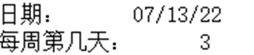

|
类型 |
系统时间 |
|
描述 |
获取系统当前时间 |
|
语法 |
string= SYSTIME(style) style: 时间格式，”%Y/%m/%d %H:%M:%S” => 2021/08/14/ 11:03 返回时间字符串
时间格式： %a 星期几的简写 %A 星期几的全称 %b 月份的简写 %B 月份的全称 %c 标准的日期的时间串 %C 年份的前两位数字 %d 十进制表示的每月的第几天 %D 月/天/年 %e 在两字符域中，十进制表示的每月的第几天 %F 年-月-日 %g 年份的后两位数字，使用基于周的年 %G 年份，使用基于周的年 %h 简写的月份名 %H 24小时制的小时 %I 12小时制的小时 %j 十进制表示的每年的第几天 %m 十进制表示的月份 %M 十进制表示的分钟数 %n 新行符 %p 本地的AM或PM的等价显示 %r 12小时的时间 %R 显示24小时制的小时和分钟：hh:mm %S 十进制的秒数 %t 水平制表符 %T 显示时分秒：hh:mm:ss（24小时制） %u 每周的第几天，星期一为第一天 （值从1到7，星期一为1） %V 每年的第几周，使用基于周的年 %w 十进制表示的星期几（值从0到6，星期天为0） %U 每年的第几周，把星期日做为第一天（值从0到53） %W 每年的第几周，把星期一做为第一天（值从0到53） %x 标准的日期串 %X 标准的时间串 %y 不带世纪的十进制年份（值从0到99） %Y 带世纪部分的十制年份 %z，%Z 时区名称，如果不能得到时区名称则返回空字符。 %% 百分号 |
|
适用控制器 |
支持4系列和5系列以上控制器 |
|
例子 |
例一： ?SYSTIME(“%Y/%m/%d %H:%M:%S”) 2021/11/12 11:30
例二： ?”日期：”, SYSTIME(“%x”) ?”每周第几天：”, SYSTIME(“%u”) 打印结果如下：  |